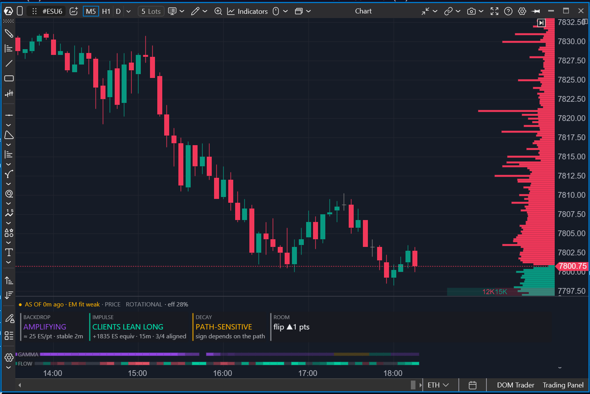

14. El centro de mando: Options X-Ray: Market State
Las últimas cuatro lecciones te entregaron cuatro instrumentos: el flujo por
cohortes, los mapas de strikes, las superficies de gamma y de charm. Cada uno
responde a su propia pregunta — y cada uno tiene su propia pantalla, sus propios
colores, su propia escala. En el trabajo real eso se convierte en el clásico
problema del tablero: mientras tus ojos viajan de un indicador al siguiente, la
imagen ya ha cambiado. El indicador final del paquete reúne las conclusiones de
todos los anteriores en un solo panel — lo que lo convierte, de paso, en la mejor
lección de repaso: todo el curso se encuentra aquí en una pantalla.
Veredictos, no una puntuación
La primera decisión de diseño que conviene entender: Market State deliberadamente
no reduce el mercado a un número. La industria adora los «sentiment scores» —
una aguja que oscila del rojo al verde —, pero ya sabemos por las lecciones 11–13
que las fuerzas del libro del MM viven en ejes incomparables. El fondo de gamma
es un estado (cómo responderá el mercado a un movimiento), el flujo de clientes
es un evento (quién empuja hacia dónde ahora mismo), el decaimiento es un
horario (qué traerá el paso del tiempo). Sumarlos en un número es como sumar la
temperatura a la velocidad del viento: obtienes una precisión que no existe.
Así que el panel habla en veredictos — uno por fuerza, cada uno con su propio
color y su propia tarjeta de hover que explica el número que hay detrás. Y para
que siempre sepas qué clase de afirmación te estás creyendo, cada veredicto
lleva una franja de color que marca la naturaleza de sus datos:
- OBSERVED (franja verde) — cosas que ocurrieron: operaciones observadas,
precio observado;
- DERIVED (gris) — calculado a partir del libro según las reglas del
indicador;
- CONDITIONAL (ámbar) — cierto bajo el supuesto de que «el libro y la
volatilidad se quedan quietos» — el mismo supuesto que la zona de proyección de
la lección 13.
Cómo está organizado el panel
El indicador vive en su propio panel bajo el gráfico y se despliega en
horizontal:
- una línea de estado arriba: un punto de frescura de datos, la edad del
minuto ancla y el veredicto PRICE — la prueba de realidad, más sobre él abajo;
- una fila de fichas BACKDROP → IMPULSE → DECAY → ROOM — cuatro veredictos
con sus números clave;
- dos cintas de calor abajo: GAMMA y FLOW — la historia de la sesión, minuto
a minuto.

Mantén esta instantánea delante: el resto de la lección la recorre de arriba
abajo — línea de estado, cuatro fichas, cintas.
El panel se adapta: cuanta menos altura le des, más compacto se vuelve — las
fichas primero pierden su línea de números, luego se pliegan en una sola línea, y
a la altura mínima cada veredicto se alinea dentro de la propia línea de estado.
No desaparece información — solo cambia la densidad de empaquetado; las
explicaciones completas viven siempre en las tarjetas de hover.
BACKDROP: en qué régimen está el libro
Es el veredicto de la lección 13 comprimido en una palabra. Toma la superficie de
gamma del minuto actual y suma la gamma de los MM en una ventana alrededor del
precio — por separado arriba y por separado abajo. Ambas sumas positivas —
DAMPING: los MM cubren contra el movimiento, el precio es absorbido. Ambas
negativas — AMPLIFYING: la cobertura opera con el movimiento, el precio
recibe combustible. Los signos discrepan — MIXED, y los detalles nombran el
lado vulnerable: «upside amplifying» significa que al precio le será más fácil
viajar hacia arriba que hacia abajo.
La anchura de la ventana está ligada a la volatilidad: un cuarto del movimiento
esperado de 30 minutos. Si la calibración del expected move de este minuto no
pasa su control de calidad, el indicador no sustituye en silencio un número
dudoso — la ventana cae honestamente a ±10 puntos, y la tarjeta lo dice.
El número bajo el veredicto es la fuerza del fondo: aproximadamente cuántos
contratos ES de cobertura de los MM genera un punto de movimiento. Y para que el
veredicto no parpadee en la frontera de régimen, pasa por una histéresis: un
estado nuevo debe sostenerse tres minutos seguidos, y deben pasar al menos cinco
minutos desde el último cambio.
IMPULSE: quién empuja ahora mismo
El veredicto de la lección 10, pero con una regla fija. El indicador suma el
reposicionamiento de la delta de los clientes sobre 15 minutos rodantes — en
todos los strikes, todos los vencimientos y las cuatro cohortes — y lo convierte
a equivalentes ES. Los clientes acumularon delta en neto — CLIENTS LEAN LONG;
la soltaron en neto — CLIENTS LEAN SHORT. Y ya sabes por la lección 9 que el
espejo es exacto: el intercambio entre clientes se cancela en la suma, el resto
cae sobre los MM, y estos cubren en la misma dirección hacia la que se inclinan
los clientes.
Dos guardias contra el ruido. Primero, un suelo: un desequilibrio más débil que
50 equivalentes ES por 15 minutos no cuenta como dirección. Segundo,
confirmación: la ventana de 5 minutos debe coincidir en signo con la de 15; una
inversión fresca del flujo rebaja honestamente el veredicto a TWO-WAY, con la
razón concreta en la tarjeta.
Este es también el lugar adecuado para explicar qué hace significativo este
número — la limpieza de datos mencionada en la lección 10. Cuando el precio se
mueve, la delta de las posiciones que ya existen deriva por sí sola,
mecánicamente: el cliente no hizo nada y aun así su exposición cambió. En minutos
rápidos esa deriva es de un tercio a dos tercios del cambio bruto. El servidor la
resta antes de que los datos lleguen al indicador, así que IMPULSE muestra
decisiones humanas, no la aritmética del libro viejo. Y como siempre con las
magnitudes netas, es un suelo de la actividad: las operaciones de clientes que se
compensan se han cancelado.
La línea más interesante de la tarjeta es el vínculo con el fondo de gamma.
Conocida la dirección de la presión, el indicador mira qué le espera en su
camino: si por delante hay gamma positiva, la tarjeta compara el tamaño del
empuje con el tamaño del colchón («el empuje es 2,3× el colchón» — probable
ruptura; por debajo de uno — probable absorción). Si la gamma en la dirección del
impulso es negativa, la tarjeta avisa en ámbar: no hay colchón, y la cobertura de
los MM añadirá combustible al mismo movimiento. Presión de los clientes más un
fondo amplificador en la misma dirección es la configuración más proclive a
tendencia que existe.
DECAY: qué traerá el tiempo
El veredicto de la lección 13 — la superficie del charm plegada en un horario
para la próxima media hora. El indicador recorre la parte pronosticada de la
superficie por tres caminos de precio — quedarse quieto, derivar hacia arriba,
derivar hacia abajo — y suma el flujo forzoso de los MM por el paso del tiempo.
Los tres caminos producen compras — DECAY BUYS, con un rango («+12 a +40 ES
en 30 minutos, según el camino»). Los tres producen ventas — DECAY SELLS. El
signo depende del camino — un honesto PATH-SENSITIVE.
La insignia de este veredicto es siempre CONDITIONAL: es un pronóstico desde el
libro actual con volatilidad sin cambios — un modelo, no una observación. Y en
los últimos 45 minutos antes del vencimiento el veredicto cambia a
EXPIRY-SENSITIVE, sin números en absoluto: el decaimiento de la serie que
vence se pone vertical, y cualquier estimación ahí es poco fiable por naturaleza,
no por la calidad de los datos — recuerdas este efecto como el «campo encendido»
del Charm Heatmap.
ROOM: cuánto espacio tiene el precio
Un marco alrededor del precio construido con los niveles de la lección 13: dónde
están las zonas amortiguadoras más cercanas, a qué distancia queda la frontera de
régimen, cuánto puede viajar todavía el mercado. Se lee como una sola línea: IN ZONE 7798–7808 · EM ±29 · flip ▲0.9 EM₃₀.
Tres detalles mantienen honesta esta línea. Las zonas amortiguadoras son
rangos, no líneas (las crestas de gamma positiva de los MM de la lección 13),
y el número de la línea es el borde más cercano de la zona: ahí empieza el
frenado, no en el strike central. Solo se muestran las zonas al alcance —
alrededor de un movimiento esperado y medio hasta el cierre: un muro a cuatro
expected moves no es un muro sino ruido, y su ausencia en la línea es una señal
en sí misma («sin colchones antes del cierre» — el aspecto típico de un día
amplificador). Y solo zonas amortiguadoras: un grupo de gamma negativa no es
un muro — no frena el precio, lo acelera, y su papel en la línea lo juega el
flip, la frontera de régimen, con su distancia en unidades del movimiento
esperado de 30 minutos: «flip ▲0.9 EM₃₀» — más o menos a una etapa típica de
media hora.
PRICE: la prueba de realidad
La quinta lectura es la única que no mira datos de opciones en absoluto. Es pura
observación de las velas de tu gráfico: en los últimos 30 minutos el precio
recorrió tantos puntos y acabó desplazado otros tantos. El desplazamiento entre
lo recorrido es la eficiencia del movimiento: por encima del 55 % —
DIRECTIONAL, el precio va a alguna parte; por debajo del 45 % —
ROTATIONAL, el precio pica sin rumbo (entre los umbrales el veredicto no
cambia).
El sentido de esta línea está en su pareja con BACKDROP: los veredictos de
opciones dicen qué debería estar pasando con el movimiento; PRICE dice qué está
pasando de hecho. AMPLIFYING + DIRECTIONAL — la imagen es coherente, la
tendencia es real. DAMPING + ROTATIONAL — un clásico día de chop, también cuadra
todo. Las discrepancias son la parte interesante: DAMPING + DIRECTIONAL significa
que la presión está atravesando el colchón, y AMPLIFYING + ROTATIONAL — hay
combustible pero no hay chispa.
Las cintas: la historia del día en una tira
Los veredictos responden al «ahora». Las dos cintas de calor en la parte baja del
panel dan las mismas respuestas — pero para toda la sesión, minuto a minuto, de
un vistazo.
GAMMA es la historia del fondo: menta — amortiguador, violeta — amplificador,
ámbar — mixto. FLOW es la historia de la presión de los clientes según la
misma regla de 15 minutos que IMPULSE: menta — los clientes se inclinan long,
coral — se inclinan short, gris tranquilo — flujo de dos vías sin dirección.
Fíjate en que el short en la cinta de flujo es rojo, no violeta. Es una
separación deliberada de paletas: el violeta en la pista vecina significa
«régimen amplificador», y un color con dos significados confundiría más de lo que
ayuda.
El brillo de las teselas es fuerza, y su escala es por sesión: el extremo
apagado de la escala es un minuto tranquilo típico de este día; el brillo pleno,
el decil superior. Las magnitudes de gamma y de flujo no son comparables entre
días, así que la cinta se calibra con su propio día — una mancha brillante
siempre significa «fuerte para los estándares de esta sesión». Pasa el cursor por
cualquier punto de una pista y la tarjeta muestra los números concretos de ese
minuto: ES de cobertura por punto y fuerza para GAMMA, el neto de 15 minutos para
FLOW. En la instantánea del inicio de la lección las dos pistas se ven a lo largo
del borde inferior del panel: la tira GAMMA, ajetreada, y la tira FLOW, más
tranquila, con sus manchas direccionales ocasionales.
Honestidad en los detalles
Para terminar — tres hábitos de este indicador que reconocerás de todo el
paquete. Los datos rancios no se dibujan: un tramo de cinta sin minuto fresco en
diez minutos se queda vacío, y el punto de estado se vuelve ámbar cuando el
minuto ancla se retrasa. Un veredicto no disponible dice N/A con motivo («el
pronóstico de ese minuto no está almacenado») en lugar de desaparecer en
silencio. Y ningún veredicto es una señal: el panel es un mapa de fuerzas — la
decisión queda en manos del trader.
El paquete ya está verdaderamente completo — hasta el tablero que corona todos
sus pisos. Queda una conversación — la que un buen curso no puede saltarse y los
materiales de marketing siempre se saltan: dónde funciona todo esto, dónde no, y
por qué. La penúltima lección trata de los límites.
- Market State no pliega las fuerzas en una puntuación: fondo, flujo y decaimiento son ejes incomparables — cada uno recibe su propio veredicto con su color y su tarjeta.
- Cada veredicto lleva una franja sobre la naturaleza de los datos: OBSERVED — lo que ocurrió, DERIVED — calculado del libro, CONDITIONAL — cierto mientras el libro y la IV se queden quietos.
- BACKDROP/IMPULSE/DECAY/ROOM son cuatro veredictos con histéresis y N/A honestos; PRICE en la línea de estado comprueba si el precio confirma la imagen.
- La tarjeta de IMPULSE compara el empuje con el colchón en su camino: por encima de uno — probable ruptura; gamma negativa por delante — «sin colchón», la configuración más proclive a tendencia.
- Las cintas GAMMA y FLOW son la historia minuto a minuto de la sesión; el brillo se calibra con el propio día, y el short del flujo es coral para que nunca se confunda con el violeta del régimen de gamma.